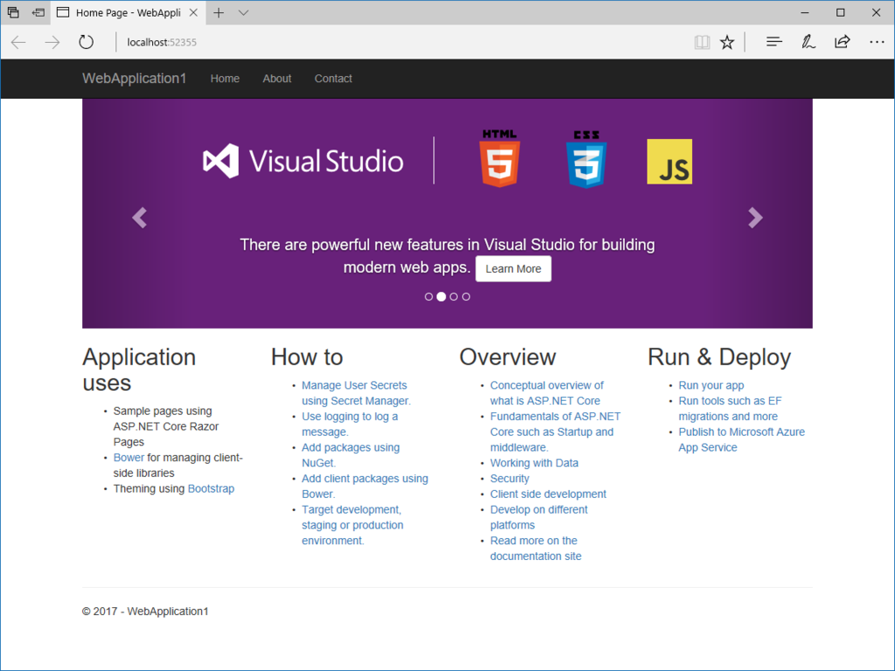

Visual Studio 2017.3 が出たっぽいので、ASP.NET Core Razor Pages をチラ見してみる
公開日：
Visual Studio 2017.3 に合わせて .NET Core 2.0 などもリリースされたみたいなので、かねてからやってみたかった Razor Pages をチラ見してみました。
ASP.NET Core Razor Pages は、とっても単純にいうと、C# で PHP みたいにサクッと Web ページ（CSHTML、名前の通り HTML に C# を埋め込んだ感じ）を書くためのフレームワークです。MVC とかめんどくせえ、ペライチのサイト（でも、サーバーサイドでの処理はちょっと必要）を作りたいだけなんじゃー！ というときに便利。むかしは ASP.NET Web Pages という技術があったのですが、ASP.NET Core ではこれを使うようですね、よく知らんけど。
プロジェクトの作成

まず、［新しいプロジェクト］コマンドで .NET Core、ASP.NET Core Web アプリケーションと辿ってソリューションを作ります。上の方に“.NET Framework 4.7”とか書いてあるのは気にしない。

ソリューションを作成するとアプリケーションのタイプを選択するダイアログが現れるので、今度は上部のプルダウンメニューから“.NET Core”、“ASP.NET Core 2.0”を選択し、“Web アプリケーション”を作成。これで ASP.NET Core Razor Page のサンプルページが出力されるはずです。今回は“チラ見”なのでそのまま進みますが、一度“空”のアプリケーションから Razor Pages を使うまでもやってみたいですね。

とりあえず［F5］キーで実行。Twitter Bootstrap＋jQuery ベースの割とごついサンプルページをブラウザーで表示することができました。

ファーストインプレッション
詳しいことは以下のサイトで学べるので、今回は省略。自分もまだ斜め読みしかしていません（汗
でも、パッと見た感じ、ASP.NET Web Pages とあまり変わらないですね。目につく違いは、
- ページの先頭に @Page ディレクティブが必要
- ルートではなく /Page 以下に *.cshtml を配置する（変更可能）
- ビューモデル（MVVM のアレではない）を *.cs ファイルに分離して紐づけられる（一枚の *.cshtml に @functions{ } でガリガリ書いていた処理を分離できる）
- OnGet などでリクエストを処理。非同期版もあるみたい public async Task
OnPostAsync() ！
ぐらいでしょうか。

ひな型には message メンバーを OnGet（GET リクエスト）で吐く感じのコードが書かれています。新しいビューを追加すると、CSHTML/CS の両方が吐き出されるんだなー。
一方、ASP.NET Web Pages 時代に慣れ親しんでたけど見当たらない、
- /App_Code や /App_Data の代わりになるものはどれ？
- _ViewStarat.cshtml（それぞれのビューをレンダリングする前に呼び出される）などはあるけど、_AppStart.cshtml はどこにいったんだろう（アプリケーション名など、App レベルで変数をもちたい場合はどこに？）
などの点は、今後の個人的課題ですね。ASP.NET と ASP.NET Core の違いもあるだろうし、ちょっとまた頑張らんと。
あと、モデルバインディングやタグヘルパーといった技術がより身近になるみたいです。必須というわけではないようですが、それを前提としているところも多いので（ひな型でもバシバシ使われてるしな……）、避けて通るのは難しそう。使いこなせれば便利なようなので、おいおい勉強していきたいと思います。